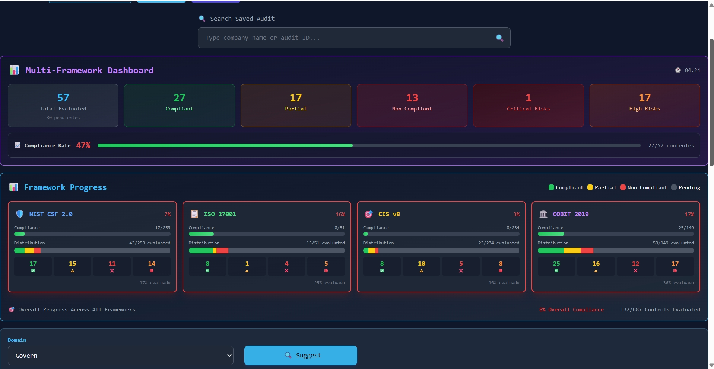
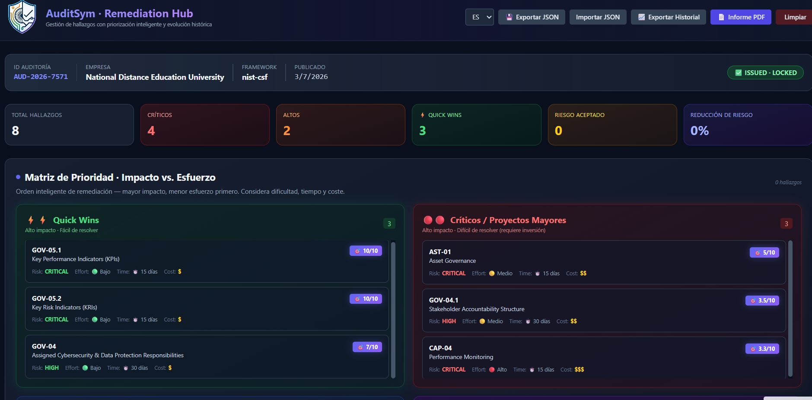

AI‑assisted cybersecurity audit platform
El flujo completo de Auditoría
AuditSym cubre todo el ciclo de vida: desde la evaluación hasta la remediación y la mejora continua.
Evalúa controles contra NIST, ISO, CIS o COBIT. Asigna riesgos, documenta evidencias y genera hallazgos.
La empresa recibe los hallazgos, prioriza (Quick Wins), asigna responsables, sube evidencias y cierra.
Visualiza la evolución año a año. Demuestra la mejora de la seguridad con datos históricos.
Descubrir más →Y cómo AuditSym transforma la complejidad en claridad.
| ❌ El Problema Común | ✅ La Solución AuditSym |
|---|---|
| Las herramientas GRC en la nube exponen datos sensibles | 100% Local-First — Tus datos nunca salen del navegador |
| Suscripciones SaaS carísimas | Open Source & Gratis — Sin licencias, para siempre |
| Evaluaciones aisladas por framework | Multi-Framework — NIST, ISO, CIS, COBIT unificados |
| Auditorías manuales basadas en Excel | 🧠 IA como Co-Piloto — Sugiere puntuaciones, pero el auditor toma la decisión final |
| Sin priorización de hallazgos | Matriz de Prioridad — Quick Wins primero (Impacto vs Esfuerzo) |
| Sin seguimiento histórico | Evolución Interanual — Demuestra la mejora continua |
Construido para auditores que necesitan claridad, no complejidad.
NIST CSF 2.0, ISO 27001, CIS Controls v8, COBIT 2019 — todos mapeados al Secure Controls Framework.
Toda la IA corre localmente. Ningún dato sale de tu máquina. Compatible con Ollama, OpenAI o Groq.
Quick Wins primero — mayor impacto, más fáciles de resolver. Priorización visual para mejores decisiones.
Visualiza la mejora de la seguridad año tras año. Demuestra la mejora continua a los stakeholders.
ES, EN, FR, DE, PT, AR, ZH — construido para equipos globales y clientes internacionales.
Todos los datos quedan en tu navegador. Exporta a JSON, importa cuando necesites. Sin nube, sin suscripción.
Así se ve AuditSym trabajando con marcos reales
Diseñado por y para auditores de ciberseguridad.

📊 Dashboard Multi-Framework con visión de auditoría y riesgos

📈 Seguimiento de Progreso por Framework (NIST, ISO, CIS, COBIT)

🤖 Hub de Remediación con IA Asistida y Priorización

🛡️ Gestión de Controles y Ciclo de Remediación
Solicita información sobre AuditSym o conecta con nosotros
Gracias por tu interés en AuditSym. Me pondré en contacto contigo a la mayor brevedad posible.